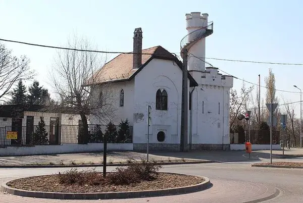

Last visit prompt
Kőványa information
Overview
The 10th district of Budapest, commonly known as Kőbánya (in German: Steinbruch), is located on the Pest side of the capital. The flat terrain is dominated by the St. Ladislaus Church, with its tower covered in Zsolnay ceramics. In addition to housing estates, the district also features garden-like and modest suburban areas. When Budapest was established in 1873, it initially belonged to the 8th district of the capital. At first, it was considered an outer district in terms of location. However, after the creation of Greater Budapest in 1950, the geometric center of the city shifted to this district, more precisely to Martinovics Square (Tchaikovsky Park).
History
The name of the district refers to the quarrying activities dating back to the Middle Ages. The first mention of the area was as "Kőér" in King Béla IV's donation letter from 1244, in which he gifted the mentioned territory for cultivation to the city of Pest. The name is preserved in the street name "Kőér utca". Due to the geological features of the area, quarrying, brick and tile production, as well as vine cultivation, thrived.
Intensive mining has been taking place in the Kőbánya area since the early 17th century. The plain was owned by the Wattay family from Upper Vatta, with Pál Pál-Pilis-Solt serving as the deputy vice-palatine. The increasing demand for building materials in Pest over time only furthered the extraction. When the plain was liberated from Ottoman rule, János Wattay, as the chief magistrate of the Vác district, and later as the first Kuruc deputy vice-palatine of the county, directed the life of Kőbánya. The Hungarian Academy of Sciences building, the University Library, and part of the pillars of the Széchenyi Chain Bridge were built from Kőbánya's raw materials. In 1890, due to dangerous mining practices, this activity was discontinued in Kőbánya.
In addition to quarrying, brick production and vine cultivation also flourished in Kőbánya in the mid-19th century. The people of Pest considered the Kőbánya of that time a pleasant excursion spot with beautiful vineyards. 80% of Pest's vineyards were located in today's Kőbánya. Kőbánya had two vineyard hills, the Old Hill and the New Hill. At the highest point of the Old Hill (148 m), the romantic-style Herdsman's Tower was built to prevent vandalism in the vineyards. József Havas, the owner of the Óhegy vineyards, sold his vineyard to Jakab Perlmutter in 1859, who was then bought out by Antal Dreher in 1862.
Extensive cellar systems, similar to those in Budafok, which remained from mining operations, aided primarily in the development of brewing, and secondarily in the cultivation of mushrooms. The largest starts at the intersection of Kőrösi Csoma Sándor Street and Kolozsvári Street and is approximately 33 km in total length.
From the 1800s, numerous factories were established in Kőbánya. Széchenyi István's mill was once built here. After the 1838 flood in Pest, the Coal Mine and Brick Factory Association was established, known as the Drasche brick factory. The first Kőbánya breweries were founded in the 1850s. This is when the Kőbányai Serház Társaság, Perlmutter, Barber, and Klusemann breweries started operating.
The history of the pig trade in Kőbánya dates back to the 1840s. It was at this time that Antal Schreyer founded the first pig farm and established connections with pig traders in Germany and Bulgaria. The stop for the Pest-Cegléd railway line, opened in 1847, was established here. This contributed to the flourishing pig trade and the population in the area. In 1856, the Pest City Council ordered the relocation of pigsties from Ligettelek to the other side of the railway, around the present-day Szállás Street in Gyardulo, where cheap plots were sold to traders. The largest farms operated around Mázsa Square. A permanent pig and cattle market was established from 1858. The thriving pig trade, commemorated by the names of many local streets and squares, was eventually brought to an end by the nationwide swine fever of 1895.
The lands around Old Hill and New Hill were parcelled out in the 1850s, and from this time on, the area began to develop. After the unification of Budapest in 1873, rapid development and population growth took place. In 1869, there were only 4,353 inhabitants, but by 1910, there were already 51,034 living in the district. However, population growth had its downsides: Kőbánya had the worst educational situation in the entire capital; only three schools operated in the district. The current Szent László High School was founded in 1907 and opened its doors in a building designed by Ödön Lechner in 1915.
Several large landfills existed in Kőbánya, most of which have been closed by now. For example, the Újhegy housing estate was built on a filled landfill. In 1896, what was then considered the largest prison in Central Europe, the Budapest Gyűjtőfogház, was built in the district. Richter Gedeon's famous pharmaceutical factory was founded in 1906 at 69 Cserkesz Street. In 1926, 101 people worked in the factory, but by the late 1960s, there were already 3,800.
On January 1, 1950, with the establishment of Greater Budapest, Kőbánya became an inner district of the city, and the geometric center of Budapest was also relocated here. Simultaneously, the boundaries of the old districts changed to a greater or lesser extent, and at this time, the area west of the Hungária Ring Road was transferred from the 10th district to the 8th district.
Kőbánya's development continued unabated during the socialist era: in 1973, approximately 80,000 people lived in the district, and at the same time, about 110,000 people (of which 48,000 commuted from the countryside) worked in the 120 factories operating here, making the 10th district the largest workers' district in the country.
Between the 1960s and the 1980s, the housing problems of the district were attempted to be solved with the construction of housing estates in various parts of the district.
